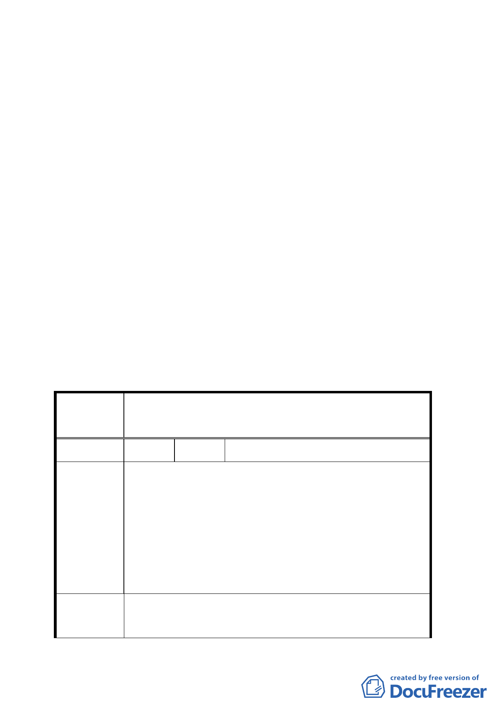

案名：變更臺北市中正紀念堂周圍特定專用區範圍土地使用分
區管制規定計畫案
說明：
一、 本案係市府以九十三年七月三十日府都規字第○九三一
○六一九○○三號函送到會，並自九十三年八月二日起公
開展覽三十天。
二、辦理單位：台北市政府
三、法令依據：都市計畫法第二十七條第一項第三款
四、計畫範圍：詳計畫圖所示
五、變更理由及內容：詳計畫報告書所示
六、公民或團體陳情意見：三件
決議：
一、 本案除高度限制維持原計畫 53 公尺外，其餘照案通過。
二、公民或團體陳情意見決議情形詳如綜理表。
臺北市都市計畫委員會公民或團體所提意見綜理表
變更臺北市中正紀念堂周圍特定專用區範圍土地使
案名
用分區管制規定計畫案
編 號 １ 陳情人 樊德懋
陳情位置：大安區金華段三小段 547 地號（大安區杭州南
路二段 19 號）
陳情理由：
陳情理由
1. 中正紀念堂周圍四周已管制 20 多年，杭州南路寬 36
公尺。
2. 中正紀念堂周圍四周馬路寬跟國父紀念館差不多。
1. 將住 3-1 提高為住 3-2 或住 4。
建議辦法
2. 土地使用分區比照國父紀念館四周一樣。
五